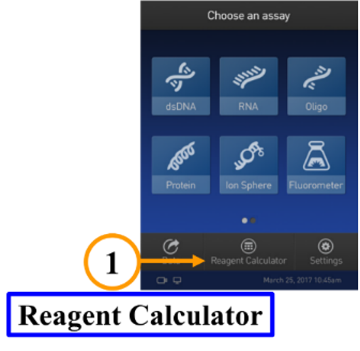
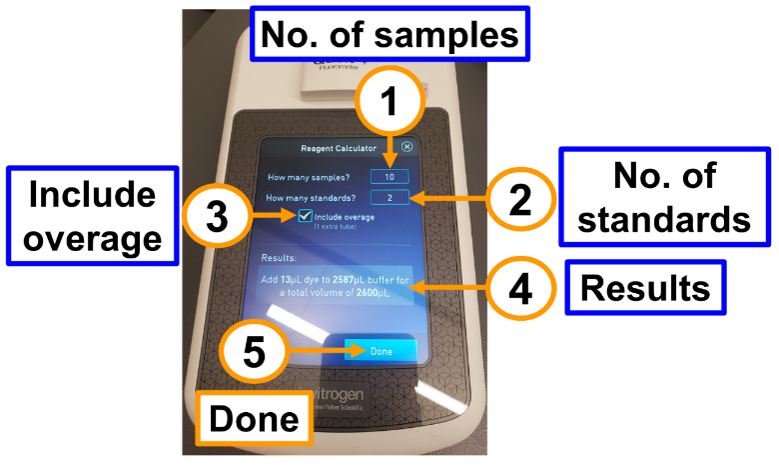
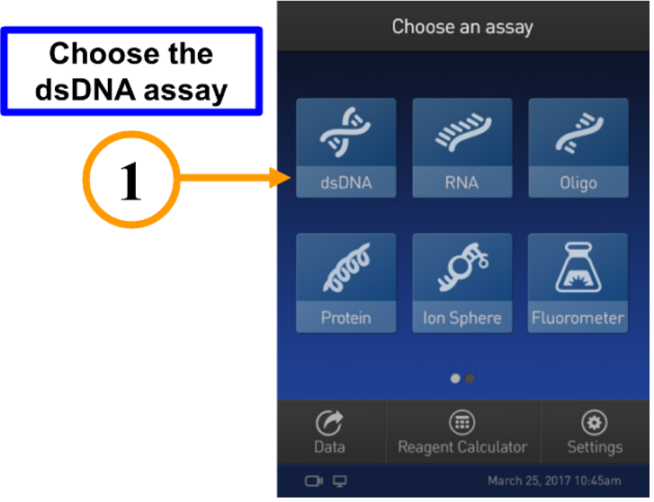
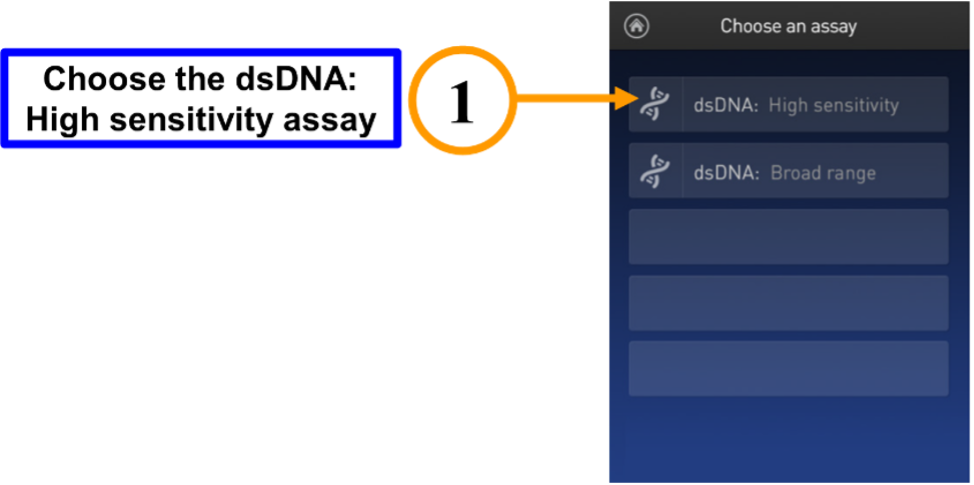
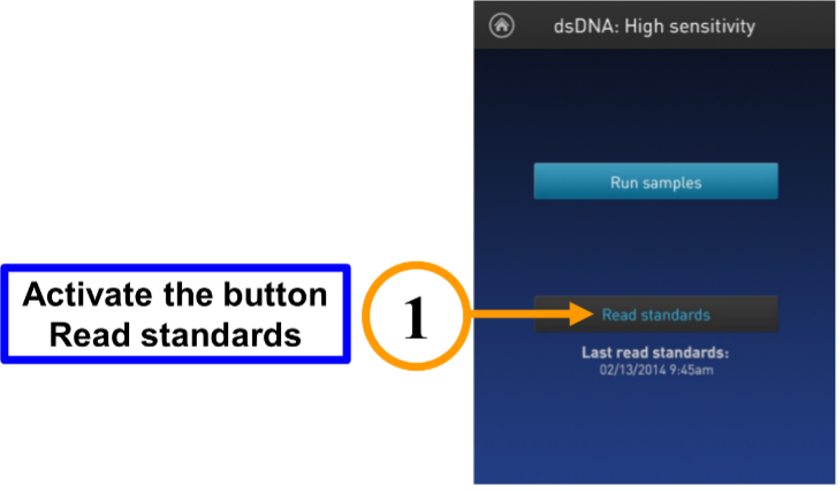
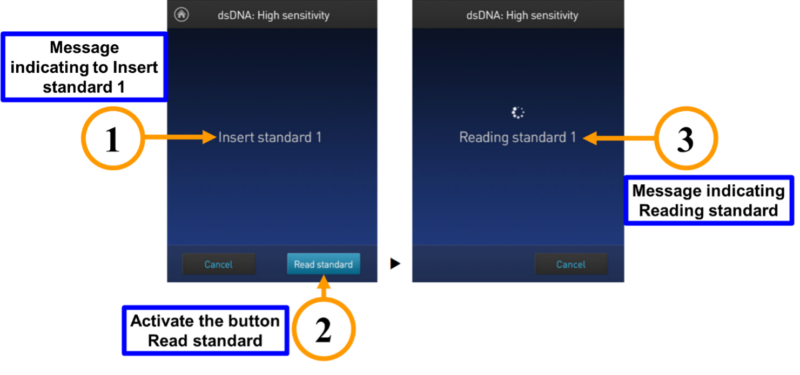
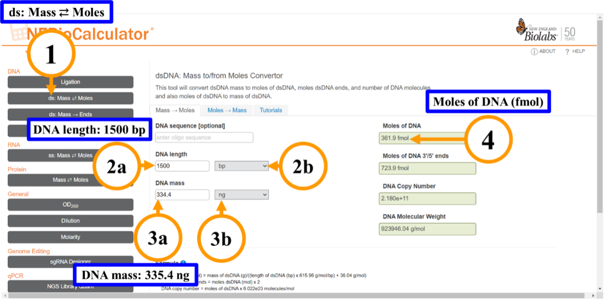
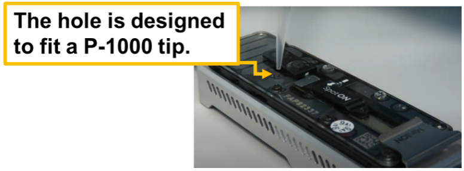
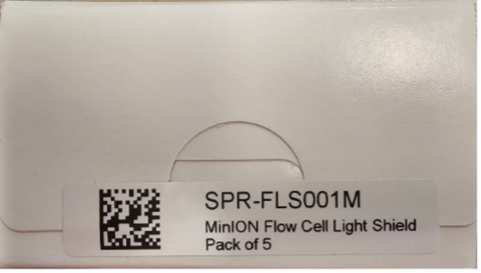

Ligation-based Amplicon Barcoding
Summary: This detailed protocol shows how PCR amplicons can be barcoded and prepared for Nanopore sequencing.
Downloads
Download: Download a copy of this template In Markdown or Microsoft Word
Protocol information
Protocol Credits
- Author(s)
- Luis E. Vázquez-Quiñones, Inter American University of Puerto Rico – Arecibo Campus
- Miguel Urdaneta-Colón, University of Puerto Rico - Río Piedras Campus
- José Agosto-Rivera, University of Puerto Rico - Río Piedras Campus
- Maintainer/contact: Luis E. Vázquez-Quiñones, Inter American University: email
- Last updated: February, 2025
- Source protocols and references
DNA source material
- Type: Any double-stranded DNA
- Collection source: Amplicon from PCR reaction
Nanopore Sequencing
- Sequencing format: MinION OR
- Sequencing kit: Native Barcoding Kit 96 V14 (SQK-NBD114.96)
- Oxford Nanopore Sequencing protocol: - Ligation sequencing amplicons - Native Barcoding Kit 96 V14 (SQK-NBD114.96)
- Indexed/Barcoded: Yes, 96 indicies
- Samples per run: 96 samples
Computer and Bioinformatics
- Analysis tools
- Varies/ not covered in this protocol
- Analysis difficulty: N/A
- Command line needed: N/A
- GPU/Super-high accuracy basecalling required: Varies depending on application
Reagents
Personal protective equipment
- As recommended by original protocols (e.g., gloves, lab coat)
Sample collection and prep
- Will vary depending on application. This protocol starts with cleaned, amplified PCR product.
DNA extraction
- Not applicable. User will need to provide 200 fmol (130 ng for 1 kb amplicons) DNA per sample to be barcoded.
DNA prep, library creation, and sequencing
- Nanopore kit
- Ligation sequencing amplicons - Native Barcoding Kit 96 V14 (SQK-NBD114.96)
- Native Adapter
- Sequencing Buffer
- Library Beads OR Library solution
- Elution buffer
- AMPure XP beads
- Long Fragement Buffer OR Short Fragement Buffer
- EDTA
- Flow Cell Flush
- Flow Cell Tether
- Native Barcode Plate
- Ligation sequencing amplicons - Native Barcoding Kit 96 V14 (SQK-NBD114.96)
- Qubit™ 1X dsDNA HS Assay
- Qubit™ reagents; dsDNA HS Assay Kit (ThermoFisher® Q32851)
- Invitrogen Qubit Assay Tubes Catalog number: Q32856 0.5 mL PCR microtubes thin-wall, clear or Axygen PCR-05-C tubes (VWR, part no. 10011-830)
- Qubit dsDNA HS Reagent
- Qubit dsDNA HS Buffer
- Qubit dilution buffer
- Qubit™ reagents; dsDNA HS Assay Kit (ThermoFisher® Q32851)
- User-provided reagents
- NEB Blunt/TA Ligase Master Mix (NEB, cat No. M0367)
- NEBNext Ultra II End repair/dA-tailing Module (NEB, cat No. E7546)
- NEBNext Quick Ligation Module (NEB, cat No. E6056)
- Agencourt AMPure XP beads
- Nuclease-free water (e.g. ThermoFisher, cat No. AM9937)
- Freshly prepared 80% ethanol in nuclease-free water (500 µL per PCR reaction to be cleaned up)
- 10 mM Tris-HCl pH 8.0 with 50 mM NaCl
Equipment and consumables
Lab equipment
- Micropipette set (e.g., P10, P100, P1000) and tips
- Microcentrifuge (20,000 x g)
- Heat block or water bath
- Qubit (dsDNA HS Assay Kit - ThermoFisher, Q32851; and assay tubes) or Nanodrop spectrophotometer for DNA quantification
- Permanent markers
- Magnetic rack for microfugue tubes(1)
- PCR machine (for incubation of samples in PCR tubes)
- Vortex mixer
Consumables
- Assorted tube racks (microfuge, conical tubes, and PCR tubes)
- 1.5-1.7ml microfugue tubes
- 0.2 ml thin-walled PCR tubes
- (Optional) 1.5 ml Eppendorf DNA LoBind tubes
Nanopore sequencing equipment
- Sequencing device: MinION or Flongle w/Adaptor
Computer equipment
- Desktop or laptop
Estimated timings
DNA End preperation
Barcode ligation
Adapter ligation
Flow cell loading
Background
The Nanopore lLigation sequencing procedure is a method of preparing DNA molecules for sequencing in a Nanopore system using different dsDNA sources. It is a flexible method that can be used with gDNA, cDNA or amplicons. The throughput is higher than the rapid methods but is more expensive because of reagents from other companies and has a longer time for preparation. Native Bbarcoding with ligation is a method for multiplex samples to reduce the cost for sample. Multiplexing may be used only when the amount of data required is less than the total of data that can be generated from a single flow cell.
The preparation of the sample has four principal steps:
- the DNA end preparation,
- the Barcode ligation,
- the adapter ligation and
- loading the flow cell.
Additional Reading
Some reading and potentially links to references.
Library Preperation - Native Barcoding Prep (96)
Goal: Attach sequencing barcodes and adaptors necessary for nanopore sequencing.
Nanopore
This protocol follows the MinION version of Native Barcoding Kit 96 V14 (SQK-NBD114.96) from Oxford Nanopore.
Preliminary Steps
Goal: Ensure DNA ends are enzymatically prepared to attach barcodes.
-
1. The DNA Control Sample (DCS) must be thawed at room temperature (RT), resuspend it by vortexing and set aside on ice.
-
2. As directed by the manufacturer, prepare the reagents for the NEBNext Ultra II End Repair / dA-tailing module and set them on ice.
-
a. Thaw all reagents vials on ice.
-
b. Make sure the reagent tubes are thoroughly mixed by flicking or inverting them and spin them down.
-
c. here might be some precipitate in the Ultra II End Prep Buffer.
-
d. After bringing the mixture to room temperature, pipette the buffer up and down several times to break up any precipitate.
-
e. Then, vortex the tube for 30 seconds to dissolve any remaining precipitate.
Important
Do not vortex the FFPE DNA Repair Mix or Ultra II End Prep Enzyme Mix.
-
-
3. There might be some precipitate in the Ultra II End Prep Buffer.
-
a. After bringing the mixture to room temperature, pipette the buffer up and down several times to break up any precipitate.
-
b. Then, vortex the tube for 30 seconds to dissolve any remaining precipitate.
-
End-repair
-
1. Add 200 fmol (130 ng for 1 kb amplicons) of each sample into a clean 96-well microplate (if you have 96 samples or prepare microtubes for the number of samples available).
-
2. Complete the volume of each sample up to 11.5 μL with nuclease-free water.
-
3. Pipette to mix gently, and spin down afterwards.
-
4. In each well or microtube, mix the following components.
✓ Ingredient Volume 200 fmol Amplicon DNA 11.5 µL Diluted DNA Control Sample (DCS) 1 µL Ultra II End-prep Reaction Buffer 1.75 μL Ultra II End-prep Enzyme Mix 0.75 μL -
5. Make sure all the ingredients are well/microtube combined by pipetting and briefly spinning them down.
-
6. In a thermal cycler Incubate for five minutes at 20 °C and five minutes at 65 °C.
Native Barcode Ligation
Preliminary steps
Note
Refer to the manufacturer's instructions to prepare the NEB Blunt/TA Master Mix and place it on ice.
-
1. Thaw all the reagents at room temperature.
-
2. Spin down the tubes containing the reagent for 5 seconds.
-
3. Perform 10 full volume pipette mixes to make sure that all reagents are thoroughly mixed.
-
a. Thaw the AMpure XP Beads (AXP) at room temperature and then mix with a vortex. Then keep them at room temperature.
-
b. Thaw the EDTA at room temperature and then mix with a vortex, spin down, and then place on ice.
-
c. According to the number of samples to be used, select the number of Native Barcodes from NB01 ![][image4] to NB96 and thaw at room temperature.
Note
Individually mix the barcodes by pipetting, spin down, and then place on ice.
-
d. For every individual sample select a unique barcode.
Note
At the final steps of the preparation, you will mix all the barcoded samples and run on the same flow cell.
-
e. Using a new 96 well place add the reagents in the following order.
✓ Ingredient Volume Nuclease free water 3 µL End-prepared DNA 0.75 µL Individual Native Barcode 1.25 μL Blunt/TA Ligase Master Mix 5 μL
-
Pause point
At this step, you may stop the procedure and store the sample overnight at 4°C.
-
Instructions
-
a. Mix the reaction thoroughly by gently pipetting and briefly spinning down.
-
b. Incubate at room temperature for 20 minutes.
-
-
2. To each well or 0.2 mL microtube, add the following volume:
✓ Clear cap EDTA Blue cap EDTA 1 µL or 2 µL -
3. Then mix thoroughly by pipetting and spin down briefly.
-
4. Pool all individual samples and purify them with the AMPure Beads on a magnetic rack.
-
a. Pool all the individual samples into one 1.5 mL Eppendorf DNA LoBind microtube.
-
b. Resuspend by vortexing the AMPure XP Beads (AXP).
-
c. Add 0.4X AMPure XP Beads (AXP) beads to the Pooled Reaction then mix by pipetting.
-
d. Mix on a rotator mixer (Hula Mixer or other) for 10 minutes at room temperature.
-
e. During the mix step prepare 2 mL of 80% ethanol in Nuclease-free water.
-
f. When finished with the mix, spin down the sample and put it on a magnetic rack to pellet for 5 minutes.
Note
You will notice that the liquid turns clear, and the pellet is aside on the magnet.
-
g. Without removing the microtube from the magnetic rack carefully remove the clear portion with a pipette without disturbing the pellet.
-
h. Do not remove the tube from the magnetic rack and wash without disturbing the pellet with 700 µL of the freshly prepared 80% ethanol.
-
i. With the tube on the rack carefully remove and discard the ethanol.
-
j. Repeat the previous step to remove the ethanol.
-
k. Take out the microtube from the rack and spin it down.
-
l. Place back the tube on the magnetic rack and pipette out any alcohol.
-
m. Allow the pellet to dry for approximately 30 seconds.
Note
Move quickly to avoid excess drying that can crack the beads.
-
n. Take out the microtube from the magnetic rack and add 35 µL of Nuclease-free water.
-
o. Gently flick the tube with your finger.
-
p. Incubate the sample for 10 minutes at 37 °C and agitate every 2 minutes by gently flicking the tube with your finger.
-
q. Put the sample back on the magnetic rack until the eluate is completely clear.
-
r. Without disturbing the pellet, remove and retain the clear eluate in a new, clean 1.5 mL Eppendorf DNA LoBind microtube.
-
s. DNA quantification: Quantify the sample using a Qubit® Fluorometer, Nanodrop®, QIAxpert® or other.
-
Pause point
At this step, you may stop the procedure and store the sample overnight at 4°C.
Adapter ligation and clean-up
Adapter ligation
Important
Do not interchange the Native Adapter (NA) of this kit with another sequencing adapter.
Prepare the NEBNext Quick Ligation Reaction Module according to the instructions of the manufacturer.
-
1. Thaw the following reagents at room temperature:
-
a. Native Adapter (NA)
-
b. Quick T4 DNA Ligase
-
c. NEBNext Quick Ligation Reaction
-
d. Elution Buffer (EB)
Mix by vortexing.
- e. Short Fragment Buffer (SFB) ; for all sizes DNA fragments or Long Fragments Buffer (LFB) for fragments of 3 kb or longer.
-
Important
The Quick T4 DNA Ligase should not be vortexed.
-
2. Spin down all reagents in a microcentrifuge for 5 seconds.
-
3. Mix thoroughly the reagents by pipetting up and down 10 times.
Important
The Quick T4 DNA Ligase should not be vortexed.
-
4. The Native Adapter (NA) and Quick T4 DNA Ligase must be first spin down, followed by pipette mixing and afterwards placed on ice.
-
5. Mix thoroughly the Elution Buffer (EB) ![A screenshot of a computerDescription automatically generated][image1] by vortexing, spin down, and place on ice.
Important
The clean-up step following adaptor ligation is intended to either enrich DNA segments of > 3 kb or purify all fragments equally, depending on the wash buffer (LFB or SFB) utilized. Use Long Fragment Buffer (LFB) to enrich DNA pieces 3 kb or longer. Use Short Fragment Buffer (SFB).
-
6. Mix in the following order these reagents in a 1.5 mL Eppendorf LoBind tube.
✓ Ingredient Volume Pooled barcoded sample 30 µL Native Adapter (NA) 5 µL NEBNext Quick Ligation Reaction (5X) 10 µL Quick T4 DNA Ligase 5 µL -
7. Spinning down briefly.
-
8. Incubate for 20 minutes at Room Temperature.
Clean-up using the AMPure XP Beads
Important
This procedure uses (LFB) or (SFB) but not 80% ethanol to wash the beads because ethanol will be detrimental to the sequencing reaction. The sequencing reaction will be hampered if ethanol is used.
-
1. Resuspend by vortexing the AMPure XP Beads (AXP).
-
2. Pipette 20 μL of the reconstituted AMPure XP Beads (AXP) into the reaction to resuspend it by pipetting.
-
3. Incubate on a rotator mixer (i.e. Hula Mixer) for 10 minutes at Room Temperature.
-
4. After the incubation, spin down the samples and place the microtubes on a 1.5 mL magnetic rack to pellet the beads.
-
You will notice that the liquid turns clear, and the pellet is on the magnet.
-
5. Without removing the microtubes from the magnetic rack, carefully remove the supernatant with a micropipette without disturbing the pellet.
-
6. Add 125 µL of Long Fragment Buffer (LFB) or Short Fragment Buffer (SFB) to wash the beads.
-
7. Resuspend the beads by flicking the microtube, spin them down, return them to the magnetic rack, and allow the beads to settle.
-
8. Without removing the microtubes from the magnetic rack, carefully remove the supernatant with a micropipette without disturbing the pellet.
-
9. Add 125 µL of Long Fragment Buffer (LFB) or Short Fragment Buffer (SFB) to wash the beads.
-
10. Resuspend the beads by flicking the microtube, spin them down, return them to the magnetic rack, and allow the beads to settle.
-
11. Without removing the microtubes from the magnetic rack, carefully remove the supernatant with a micropipette without disturbing the pellet.
-
12. After a spin-down, replace the microtubes on the magnetic rack and remove any remaining supernatant.
-
13. After taking the microtubes out of the magnetic rack, resuspend the pellet in 15 μL of Elution Buffer (EB).
-
14. After a spin-down, incubate the sample for 10 minutes at 37 °C and resuspend the pellets every 2 minutes by flicking the microtube for 10 seconds (encourage DNA elution from the beads) with your finger.
-
15. Return the microtubes to the magnetic rack until the eluate is completely clear, for at least 1 minute.
-
16. Without disturbing the pellet, remove and retain 15 µL of the clear eluate in a new, clean 1.5 mL Eppendorf DNA LoBind microtube.
-
17. Determine the sample concentration by quantifying 1 µL of the eluted sample with a Qubit® fluorometer, Nanodrop®, QIAxpert® or other.
-
18. After quantifying the samples (DNA quantification section), prepare the library up to 12 µL at 10-20 fmol.
Important
It is recommended to load 10-20 fmol of the final prepared library onto the R10.4.1 ONT MinION flow cell (FLO-MIN114). The final prepared library should be stored on ice until ready for loading.
DNA quantification
- 1. Quantify the sample using a Qubit™ Fluorometer (Invitrogen™, Q32856), Nanodrop™, QIAxpert® or other for DNA quantification.
Steps to quantify the DNA
-
1. Set aside two microtubes for the standards (dsDNA High Sensitivity needs 2 standards) and one microtube per sample.
-
2. Label the microtubes on the lid (DO NOT label on the side), the instrument will be reading the sample through the microtube side.
-
3. The working solution needs to be prepared in a plastic tube diluting the dsDNA HS reagent 1:200 in dsDNA HS Buffer.
-
a. Now use your Qubit reagent calculator and indicate the number of samples & 2 standards.
-
b. Prepare the Qubit working solution by mixing the volume of Qubit dye and the volume of Qubit dilution.
-
Important
Do not mix the working solution in a glass container.
{kind=link}

{kind=link}

(2-1) Type the number of samples, (2-2) Type the number of standards, (2-3) Select include overage, (2-4) Use the results to prepare the reagent, and (2-5) Active the Done button when finished
-
4. Add the working solution to the microtubes:
-
Standards
- 190 µL of the working solution per microtube
-
Samples
- 199 µL of the working solution per microtube
-
-
5. Add the samples:
-
Standards
- 10 µL of the standard to their corresponding microtube and mix it by vortexing for 2–3 seconds to avoid creating bubbles.
-
Samples
- 1 µL of the standard into their corresponding microtube and mix it by vortexing for 2–3 seconds to avoid creating bubbles.
-
-
6. Incubate the samples and standards for 2 minutes at room temperature.
-
7. Now select the assay type dsDNA HS (High Sensitivity; Figure 3-4).
{kind=link}

{kind=link}

- 8. Read the standards (Figure 5)
{kind=link}

{kind=link}

-
a. Read standard 2.
-
9. Now, read the samples and start preparing the pooled sample.
Example
Example: Quantifying DNA with the Qubit
| Sample | [DNA] (ng/µL) |
|---|---|
| 1 | 32.8 |
| 2 | 29.6 |
| 3 | 41.2 |
| 4 | 44.0 |
| 5 | 41.6 |
| 6 | 27.4 |
-
☐ Identify the sample with the highest [DNA].
-
☐ Divide the highest concentration by the concentration of each sample to obtain the volume that needs to be transferred for the pool.
| Sample | [DNA] (ng/µL) | Volume for pooling the samples |
|---|---|---|
| 1 | 32.8 | 44.0 / 32.8 \= 1.34 µL \= 1.3 µL |
| 2 | 29.6 | 44.0 / 29.6 \= 1.49 µL \= 1.5 µL |
| 3 | 41.2 | 44.0 / 41.2 \= 1.07 µL \= 1.1 µL |
| 4 | 44.0 | 44.0 / 44.0 \= 1.00 µL \= 1.0 µL |
| 5 | 41.6 | 44.0 / 41.6 \= 1.06 µL \= 1.1 µL |
| 6 | 27.4 | 44.0 / 27.4 \= 1.61 µL \= 1.6 µL |
| Total | 7.6 µL |
- ☐ Compute the total mass
-
Total DNA ng = Total volume in the pooled sample (µL) x [Highest DNA] (ng/µL)
-
Total DNA ng = 7.6 µL x 44.0 ng/µL = 334.4 ng
-
10. Connect to the NEBioCalculator and compute the fmol for your pooled samples.

Figure 7: Computing the femtomoles of DNA in our pooled sampleThis image shows the New England Biolabs Calculator to compute the double stranded DNA mass to moles:Step 1: Select ds: Mass to Moles or viceversa.Step 2:2a) Type the DNA length.2b) Select the DNA length units.Step 3:3a) Type the DNA mass.3b) Select the DNA mass units.Step 4: Now you have the fmol of DNA in your pooled sample. -
a. Select ds: Mass ⇄ Moles
-
b. Type the DNA length; you need to determine the average length of the fragments to compute the fmoles. In our case, the average length for our amplicon is 1,500 bp.
-
c. Select the DNA length units.
-
d. Type the DNA mass.
-
e. Select the DNA mass units; Now you have the fmol of DNA in your pooled sample.
-
-
11. Compute the pooled samples volume that we need to transfer to the sample for sequencing.
{kind=link}
Priming and loading the SpotON flow cell
Important
The “Ligation sequencing amplicons – Native Barcoding Kit 96 V14 (SQK-NBD114.96)” is only compatible with R10.4.1 flow cells (FLO-MIN114).
Preliminary steps
Before combining by vortexing, thaw at room temperature the following reagents spin them down once thawed and store them on ice.
| ✓ | Reagents |
|---|---|
| Sequencing Buffer (SB) | |
| One tube of Flow Cell Flush (FCF) | |
| Library Beads (LIB) for most experiments or Library Solution (LIS) | |
| Flow Cell Tether (FCT) | |
| 50 mg/mL Bovine Serum Albumin (BSA) |
Important
To get the best sequencing performance and improved output on MinION R10.4.1 flow cells (FLO-MIN114), it is recommended to add Bovine Serum Albumin (BSA) to the flow cell priming mix to a final concentration of 0.2 mg/mL. BSA ensures that more DNA strands are available for the nanopores by blocking non-specific binding in the flow cell, which boosts sequencing output.
-
1. Combine the following reagents to prepare the flow cell priming mix with BSA and mix by inverting the tube and pipette mix at room temperature.
✓ Ingredient Vol. (+ BSA) Vol. (- BSA) Flow Cell Flush (FCF) 1,170 µL 1,170 µL 50 mg/mL Bovine Serum Albumin (BSA) 5 µL Nuclease-free water 5 µL Flow Cell Tether (FCT) 30 µL 30 µL Total 1,205 µL 1,205 µL Note
- BSA ensures that more DNA strands are available for the nanopores by blocking non-specific binding in the flow cell, which boosts sequencing output.
- his solution contains a hydrophobic tether molecule used to anchor the nucleic acid onto the membrane close to the nanopore.
-
2. Slide the flow cell inside under the MinION’s clip by opening its lid; to ensure correct thermal and electrical contact press down firmly the flow cell.
Important
When removing the transport buffer from the flow cell, proceed with caution. Set your P-1000 micropipette to 500 µL and remove 20-30 µL of the transportation buffer slowly by only using the piston of your micropipette. Removing more than 20–30 μL is not advised. It is of the utmost importance that the buffer always covers the array of pores. Pores might sustain irreversible damage when air bubbles are introduced into the array.
-
3. Open the priming port (Figure 8) by sliding the lid 90° clockwise to remove it from the priming port and stop when you feel a bit of resistance.
-
a. Set your P-1000 micropipette to 500 µL
-
b. Insert the tip of your P-1000 into the priming port strongly to create a good seal.
Important
Only use the piston of the P-1000 to remove 20-30 µL of the transportation buffer to remove the transportation bubble.

Figure 8: ONT MinION’s flow cell priming port.This image shows the oxford nanopore technology MinION flow cell priming port. -
c. Turn the piston of the P-1000 to remove 20–30 µL until the dial reads 520-530 µL.
Important
Verify visually that the buffer from the priming port is continuous throughout the sensor array.
-
-
4. Avoid adding air bubbles; load 800 μL of the priming mix into the flow cell through the priming port by only using the piston of your P-1000.
-
a. Wait for a period of 5 minutes.
-
b. Use this incubation time to prepare the library for loading.
-
-
5. Prepare the library in a new 1.5 mL Eppendorf DNA LoBind microtube as follows:
-
a. 37.5 μL Sequencing Buffer (SB).
Important
The Library Beads (LIB), these beads settle quite fast. It is of the utmost importance to mix them immediately prior to their use.
-
b. Mix immediately before use and add 25.5 μL Library Beads (LIB) to the microtube library; Use your micropipette P-1000 to thoroughly mix the contents of the **Library Beads (LIB.
-
c. 12 μL DNA library
-
11.34 µL of Nuclease-free water
-
0.66 µL of pooled DNA library
-
-
6. Resume flow cell priming:
-
a. Carefully, lift the SpotOn sample port lid to expose the SpotOn sample port.
-
b. Avoid adding air bubbles; load an additional 200 μL of the priming mix into the flow cell through the priming port by only using the piston of your P-1000.
-
-
7. Prior to loading, mix the sample library by pipetting up and down carefully.
-
8. In a dropwise manner, add 75 µL of the prepared library to the flow cell through the SpotOn sample port; before adding the next drop, make sure the last one flows into the port.
-
9. Close the priming port and carefully reinstall the SpotON sample port cover, making sure the bung goes into the SpotON port.
Important
The Library Beads (LIB), these beads settle quite fast. It is of the utmost importance to mix them immediately prior to their use.
-
10. As soon as the library has been loaded, install the light shield on your flow cell for optimal sequencing output; the Light Shield comes in a sealed envelope (Figure 9).
Important
Avoid pushing the light shield beneath the clip.

Figure 9: Oxford Nanopore Technologies (ONT) MinION’s flow cell light shieldThe shields inside the envelope protect the flow cells from light while sequencing. This improves the flow cell's output and prolongs the in-run pore lifetime. This image shows the envelope that contains the light shields that protect the flow cell while sequencing. -
a. Position the light shield's leading edge against the clip with caution.
-
b. Lower the light shield carefully onto the flow cell.
-
c. The light shield needs to entirely encircle the SpotON cover and completely cover the top portion of the flow cell.
-
-
11. Close the MinION lid and use the MinKNOW software to configure the sequencing run.
{kind=link}
{kind=link}
Completing the experiment
-
1. Stop the sequencing by clicking on the stop button.
-
2. If you would like to reuse the flow cell after your sequencing experiment is over, please follow the instructions in the Flow Cell Wash Kit and keep the cleaned flow cell at 2-8 °C.
-
3. Alternatively, clean out the flow cell and prepare it for return to Oxford Nanopore by following the returns protocol.